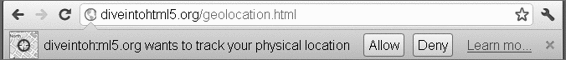

地理定位（geolocation）是最令人兴奋，而且得到了广泛支持的一个新API。通过这套API，JavaScript代码能够访问到用户的当前位置信息。当然，访问之前必须得到用户的明确许可，即同意在页面中共享其位置信息。如果页面尝试访问地理定位信息，浏览器就会显示一个对话框，请求用户许可共享其位置信息。图25-1展示了Chrome中的这样一个对话框。

图 25-1
Geolocation API在浏览器中的实现是navigator.geolocation对象，这个对象包含3个方法。第一个方法是getCurrentPosition()，调用这个方法就会触发请求用户共享地理定位信息的对话框。这个方法接收3个参数：成功回调函数、可选的失败回调函数和可选的选项对象。
其中，成功回调函数会接收到一个Position对象参数，该对象有两个属性：coords和timestamp。而coords对象中将包含下列与位置相关的信息。
latitude：以十进制度数表示的纬度。
longitude：以十进制度数表示的经度。
accuracy：经、纬度坐标的精度，以米为单位。
有些浏览器还可能会在coords对象中提供如下属性。
altitude：以米为单位的海拔高度，如果没有相关数据则值为null。
altitudeAccuracy：海拔高度的精度，以米为单位，数值越大越不精确。
heading：指南针的方向，0°表示正北，值为NaN表示没有检测到数据。
speed：速度，即每秒移动多少米，如果没有相关数据则值为null。
在实际开发中，latitude和longitude是大多数Web应用最常用到的属性。例如，以下代码将在地图上绘制用户的位置：
navigator.geolocation.getCurrentPosition(function(position){
drawMapCenteredAt(position.coords.latitude, positions.coords.longitude);
});
以上介绍的是成功回调函数。getCurrentPosition()的第二个参数，即失败回调函数，在被调用的时候也会接收到一个参数。这个参数是一个对象，包含两个属性：message和code。其中，message属性中保存着给人看的文本消息，解释为什么会出错，而code属性中保存着一个数值，表示错误的类型：用户拒绝共享（1）、位置无效（2）或者超时（3）。实际开发中，大多数Web应用只会将错误消息保存到日志文件中，而不一定会因此修改用户界面。例如：
navigator.geolocation.getCurrentPosition(function(position){
drawMapCenteredAt(position.coords.latitude, positions.coords.longitude);
}, function(error){
console.log("Error code: " + error.code);
console.log("Error message: " + error.message);
});
getCurrentPosition()的第三个参数是一个选项对象，用于设定信息的类型。可以设置的选项有三个：enableHighAccuracy是一个布尔值，表示必须尽可能使用最准确的位置信息；timeout是以毫秒数表示的等待位置信息的最长时间；maximumAge表示上一次取得的坐标信息的有效时间，以毫秒表示，如果时间到则重新取得新坐标信息。例如：
navigator.geolocation.getCurrentPosition(function(position){
drawMapCenteredAt(position.coords.latitude, positions.coords.longitude);
}, function(error){
console.log("Error code: " + error.code);
console.log("Error message: " + error.message);
}, {
enableHighAccuracy: true,
timeout: 5000,
maximumAge: 25000
});
这三个选项都是可选的，可以单独设置，也可以与其他选项一起设置。除非确实需要非常精确的信息，否则建议保持enableHighAccuracy的false值（默认值）。将这个选项设置为true需要更长的时候，而且在移动设备上还会导致消耗更多电量。类似地，如果不需要频繁更新用户的位置信息，那么可以将maximumAge设置为Infinity，从而始终都使用上一次的坐标信息。
如果你希望跟踪用户的位置，那么可以使用另一个方法watchPosition()。这个方法接收的参数与getCurrentPosition()方法完全相同。实际上，watchPosition()与定时调用getCurrentPosition()的效果相同。在第一次调用watchPosition()方法后，会取得当前位置，执行成功回调或者错误回调。然后，watchPosition()就地等待系统发出位置已改变的信号（它不会自己轮询位置）。
调用watchPosition()会返回一个数值标识符，用于跟踪监控的操作。基于这个返回值可以取消监控操作，只要将其传递给clearWatch()方法即可（与使用setTimeout()和clearTimeout()类似）。例如：
var watchId = navigator.geolocation.watchPosition(function(position){
drawMapCenteredAt(position.coords.latitude, positions.coords.longitude);
}, function(error){
console.log("Error code: " + error.code);
console.log("Error message: " + error.message);
});
clearWatch(watchId);
以上例子调用了watchPosition()方法，将返回的标识符保存在了watchId中。然后，又将watchId传给了clearWatch()，取消了监控操作。
支持地理定位的浏览器有IE9+、Firefox 3.5+、Opera 10.6+、Safari 5+、Chrome、iOS版Safari、Android版WebKit。要了解使用地理定位的更多精彩范例，请访问http://html5demos.com/geo。